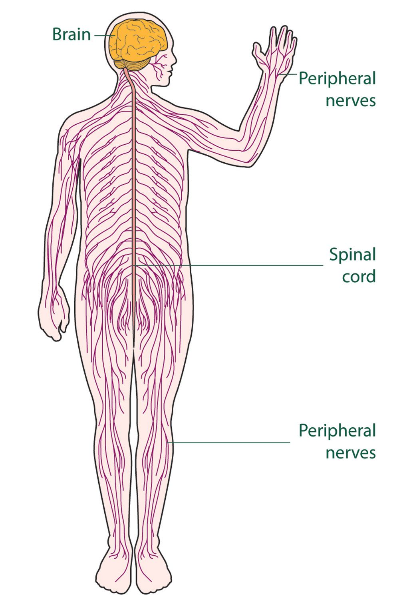

Our body is made up of a nembur of organ system which fuction together. Is the any controlling unit also that instructs and coordinates among the diffrent organs? Is there any systum thst crontals the other body system? yes, it is the nervous system. Let us learn more about the nervous system of our body.
The nervous system is the main contralling unit of our body. The main three parts of our body are the brain, the spinal cord and nerves.
BrainThe brain is a very important organ. It is very delicate and is enclosed inside the skull. The gap between the scull and the brain is filled with a jelly-like fluid, which further crushions the brain. In an adult human being , the brain weighs approximately 1.4 Kg.
 thanks